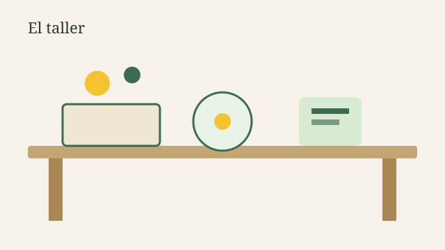

Cerámica lenta
Modelado a mano, esmaltes y una pieza para llevar. Ideal si nunca tocaste el barro.
Nido de Ideas es un espacio de cerámica, ilustración y talleres presenciales. Acá se aprende despacio, se prueba sin miedo y se lleva a casa una pieza hecha por vos.
El taller está pensado para principiantes y para quienes ya vienen trabajando un oficio. Las clases son en grupos chicos, con materiales incluidos y seguimiento personalizado.
El objetivo de esta página es presentar el espacio, mostrar proyectos recientes y facilitar el contacto para reservas o consultas.

Modelado a mano, esmaltes y una pieza para llevar. Ideal si nunca tocaste el barro.
Observamos una planta real y armamos una lámina. No hace falta saber dibujar.
Un sábado al mes el espacio se abre para quien quiera continuar un proyecto propio.